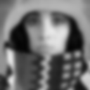
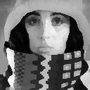

Summary of Smoothing Algorithms
The following table summarizes the various properties of the smoothing algorithms presented above.
The filter size is assumed to be bounded by a rectangle of J Χ K where,
without loss of generality, J ≥ K. The image size is N Χ N.
| Algorithm |
Domain |
Type |
Support |
Separable / Incremental |
Complexity/pixel |
| Uniform |
Space |
Linear |
Square |
Y / Y |
O(constant) |
| Uniform |
Space |
Linear |
Circular |
N / Y |
O(K) |
| Triangle |
Space |
Linear |
Square |
Y / N |
O(constant)a |
| Triangle |
Space |
Linear |
Circular |
N / N |
O(K) a |
| Gaussian |
Space |
Linear |
∞ ? |
Y / N |
O(constant) a |
| Median |
Space |
Non-Linear |
Square |
N / Y |
O(K) a |
| Kuwahara |
Space |
Non-Linear |
Square a |
N / N |
O(J*K) |
| Other |
Frequency |
Linear |
-- |
-- / -- |
O(logN) |
Table 13>: Characteristics of smoothing filters. See text for additional explanation.
Examples of the effect of various smoothing algorithms are shown in Figure 30.

a) Original b) Uniform 5 × 5 c) Gaussian (σ= 2.5)

d) Median 5 × 5 e) >Kuwahara 5 × 5
Figure 30: Illustration of various linear and non-linear smoothing filters